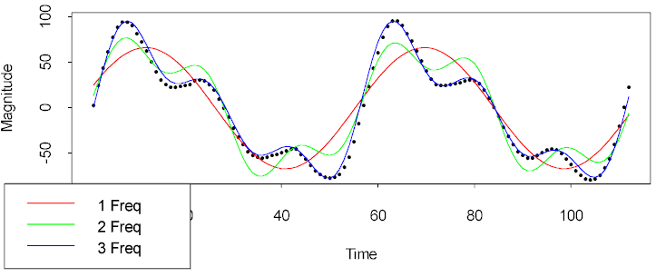

| / Home |
Keywords: time series, sum of sinusoids, discrete spectra
The data give the normalized magnitudes of the voice data when the vowel 'ooh' was sung at a pitch of 290 Hz. A Kurzweil K2500 Sampler/Synthesizer was used to capture and to store the data.
The frequencies found in the signal can be used to identify the phonetical vowel, and are of interest in voice synthesis, therapy and training. Further details are given in Oliver (1997).
| Variable | Description | ||
| Magnitude | Normalized Magnitudes at equi-spaced time intervals | ||
Data File (tab-delimited text)
| Oliver, W. D. (1997). The Singing Tree: A Novel Interactive Musical Interface. Master of Science Thesis, Massachusetts Institute of Technology. The data given here was digitized from Figure C-4. |
| Smyth, G. K. (2000). Employing symmetry constraints for improved frequency estimation by eigenanalysis methods. Technometrics 42, 277-289. (Abstract - Zipped Postscript) |
The signal contains three strong sinusoids. The following graph gives the results of fitting one, two and three sinusoids respectively to the data. The S-Plus codes uses the function pronyfreq.
> out3 <- pronyfreq(Magnitude,nfreq=3)
> out2 <- pronyfreq(Magnitude,nfreq=2)
> out1 <- pronyfreq(Magnitude,nfreq=1)
> plot(Time,Magnitude)
> lines(Time,out1$fitted,col=2)
> lines(Time,out2$fitted,col=3)
> lines(Time,out3$fitted,col=4)
> legend(locator(1),legend=c("1 Freq","2 Freq","3 Freq"),col=c(2,3,4),lty=1)

The frequences are estimated to be 0.11, 0.23 and 0.34. A constant term of -0.978 is also estimated, which might be put to zero.
> out3$freq [1] 0.1134373 0.2299815 0.3401675 > out3$coef [1] -0.9780157 8.1729553 -1.3621919 -5.6189912 66.2204549 22.5080047 [7] 24.6546725
|
Home - About Us -
Contact Us Copyright © Gordon Smyth |